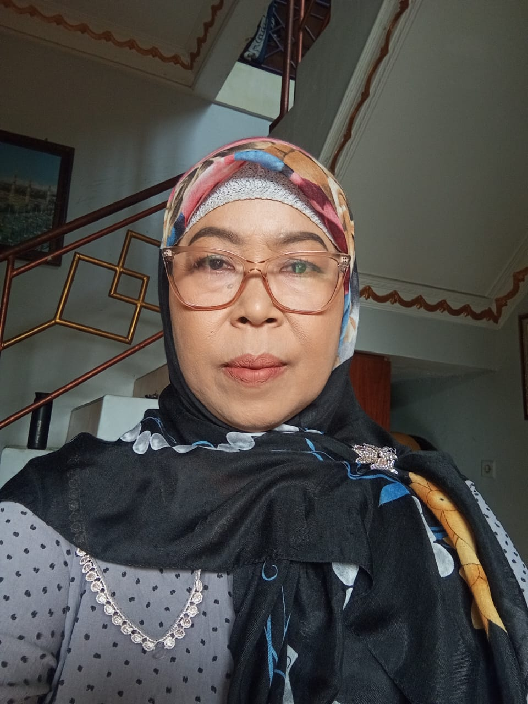
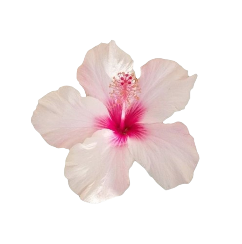
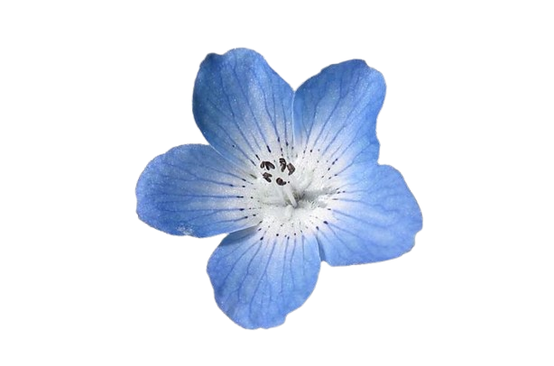

🎉 Selamat Ulang Tahun Mamah! 🎂

💐 love you 💐
Selamat ulang tahun, mamah tersayang Semoga mamah selalu sehat, dipanjangkan umurnya dan dilancarkan urusan dunia dan akhiratnya. Terima kasih atas segalanya, love you. 💖🎉
 